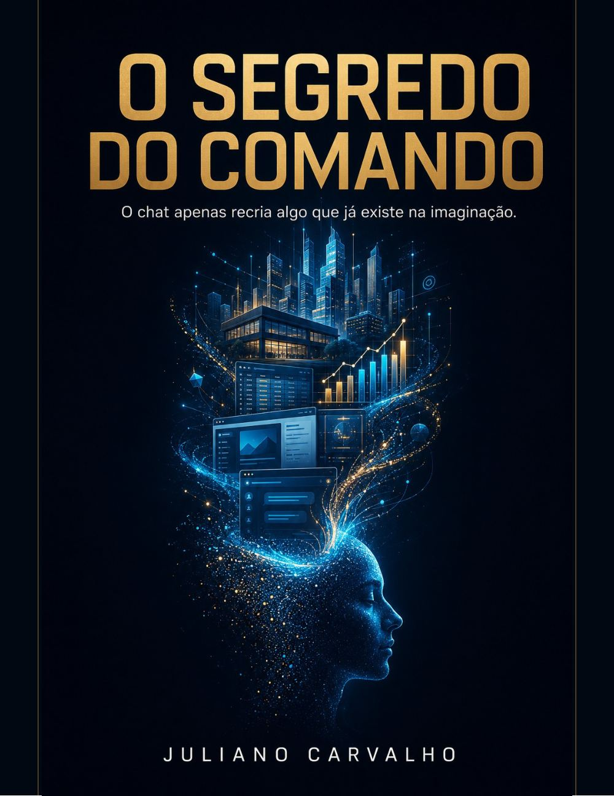
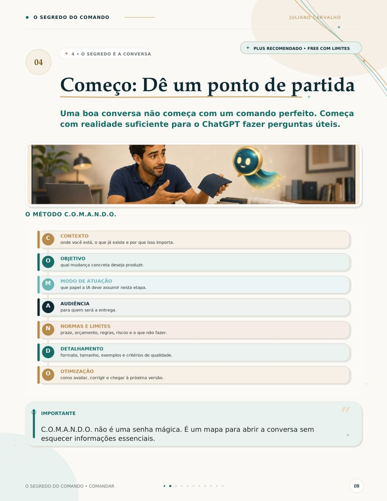
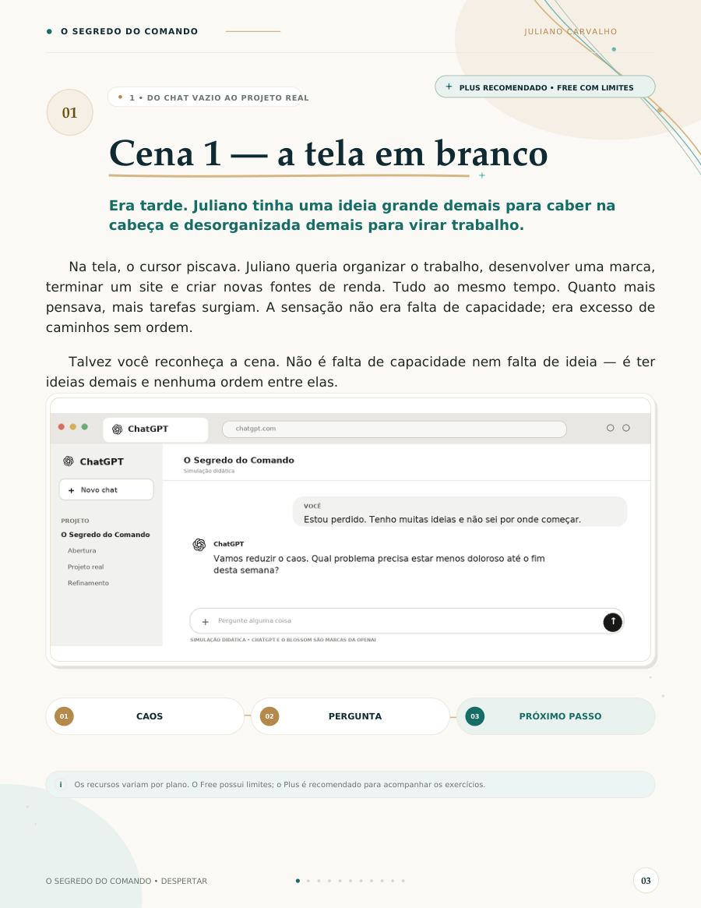
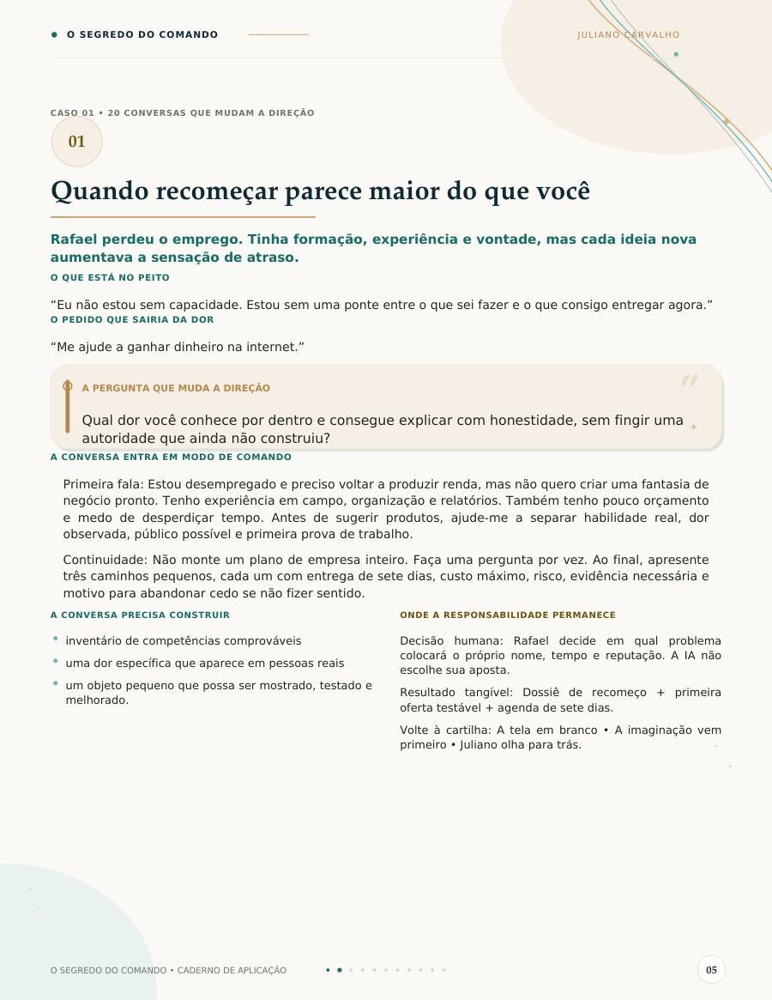
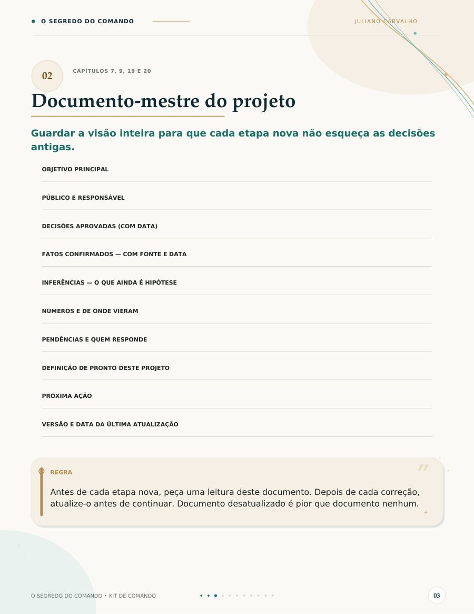
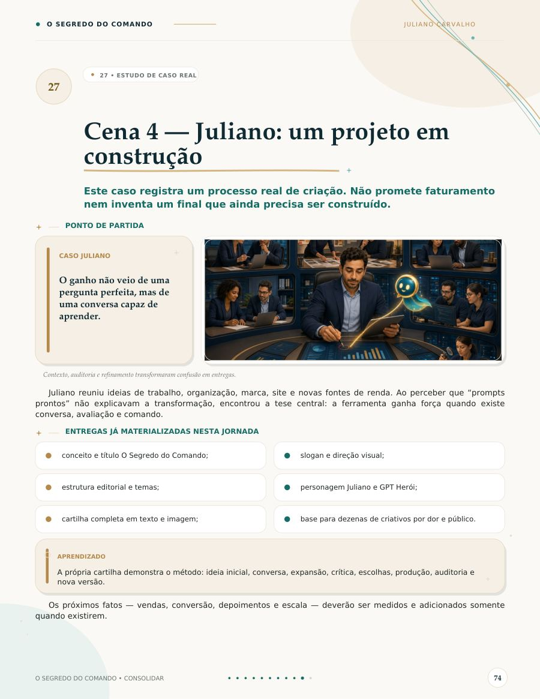

A diferença, ao vivo
O mesmo pedido. Dois destinos.
O que você não diz, a máquina decide por você. Veja a conversa acontecer:
❯ faça um relatório de vendas — resposta genérica. serve para qualquer empresa. não decide nada. ❯ com o método: CONTEXTO planilha jan–jun, colunas inconsistentes OBJETIVO diretoria decide sobre o canal marketplace NORMAS não estime dados ausentes — sinalize ENTREGUE três decisões numeradas, com risco e responsável — agora a resposta tem dono, prazo e critério.
As sete partes
Sete decisões que você toma — ou a máquina toma por você.
Páginas reais do material
Não é promessa. É o que está lá dentro.






← arraste →
Antes de comprar
Para quem é — e para quem não é.
Faz sentido se você
- já usa ChatGPT e não tira resultado de trabalho dele
- precisa entregar relatório, planilha, apresentação ou proposta
- quer método, não uma lista de frases para copiar
- aceita que a decisão final continua sendo sua
Não compre se você
- procura ganhar dinheiro rápido com IA
- quer prompts prontos para colar sem pensar
- espera que a ferramenta decida no seu lugar
- não pretende abrir o material depois de comprar
Este material não promete renda, promoção ou resultado garantido. Ele ensina raciocínio, organização e colaboração com IA.
Dúvidas honestas
O que costumam perguntar
É uma lista de prompts?
Não. É um método de sete partes e 29 capítulos sobre como conduzir a conversa até uma entrega verificável. Prompts prontos envelhecem; o método continua servindo quando a ferramenta muda.
Preciso pagar o ChatGPT Plus?
O material indica onde o plano gratuito tem limite e onde o pago ajuda. Boa parte dos exercícios roda no gratuito.
Serve para quem nunca usou IA?
Serve. A cartilha começa antes da ferramenta — em como organizar a própria ideia. Mas ela assume que você quer aplicar no trabalho, não só experimentar.
Como recebo?
Acesso digital imediato após a confirmação do pagamento, direto no seu e-mail. Leitura no celular ou no computador.
E se não for para mim?
Você tem 7 dias para pedir reembolso, conforme o direito de arrependimento em compras online. Sem justificativa e sem discussão.
O material promete que vou ganhar dinheiro?
Não, e essa recusa é proposital. O livro manda procurar contador, advogado ou profissional habilitado quando a decisão exige, e afirma que elogio não é intenção de compra. Quem promete renda fácil não está vendendo método.
Comece hoje
Tudo por R$ 37
No checkout você pode adicionar o Kit de Comando — 12 artefatos prontos para usar — por R$ 27. Opcional.
Pagamento seguro · acesso imediato · 7 dias de garantia